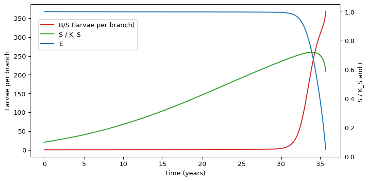

Budworm and Forest: Fast and Slow
Module 1: Low-Dimensional Dynamics
With the forest fixed, an outbreak never ends. Ludwig, Jones and Holling let the forest change on its own, slower time scale and obtained the outbreak and collapse cycle from three differential equations (ludwig1978qualitative?). This page summarizes their model. All equations and parameter values come from that paper.
Time scales
Ludwig et al. estimate that the budworm density can change several hundredfold in a few years, so its characteristic time is of the order of months. Trees need 7 to 10 years to replace their foliage and live 100 to 150 years (ludwig1978qualitative?). The budworm is the fast variable; the forest is slow.
The three-variable model
The state is the budworm density \(B\) (larvae per acre), the total branch surface area \(S\) (branches per acre) and an “energy reserve” \(E\) that measures the condition of the trees, with maximum \(K_E = 1\):
\[ \begin{aligned} \frac{dB}{dt} &= r_B B\left(1 - \frac{B}{K' S}\right) - \beta\,\frac{B^2}{(\alpha' S)^2 + B^2},\\ \frac{dS}{dt} &= r_S S\left(1 - \frac{S}{K_S}\,\frac{K_E}{E}\right),\\ \frac{dE}{dt} &= r_E E\left(1 - \frac{E}{K_E}\right) - P\,\frac{B}{S}. \end{aligned} \tag{1}\]
This is eqns (3), (10) and (11) of (ludwig1978qualitative?) with the carrying capacity \(K_B = K'S\) and the half-saturation density \(\alpha = \alpha' S\) both proportional to branch area (eqns 13 and 14). The budworm equation is the model of The Spruce Budworm Model; its dimensionless groups become
\[ R = \frac{\alpha' r_B}{\beta}\,S, \qquad Q = \frac{K'}{\alpha'} , \]
so \(Q\) is fixed and \(R\) grows with the forest (ludwig1978qualitative?, eqn 15).
The outbreak cycle
Ludwig et al. describe the cycle qualitatively (ludwig1978qualitative?):
- A young forest has small \(S\), so \(R\) is small and the budworm stays at the refuge level, controlled by predators.
- As the forest grows, \(R\) increases until it crosses the upper fold of the \((Q, R)\) diagram. The refuge disappears and the budworm jumps to the outbreak level.
- During the outbreak, consumption \(PB/S\) exceeds the recovery of \(E\) when \(M = PK'/(r_E K_E) > 1/4\), so \(E\) and then \(S\) decline.
- The smaller forest lowers \(R\) below the lower fold and the outbreak collapses.
Figure 1 integrates Equation 1 with the Level III parameter values of the paper (\(r_B = 1.52\), \(K' = 335\), \(\beta = 43\,200\), \(\alpha' = 1.11\), \(r_S = 0.095\), \(K_S = 25\,440\), \(r_E = 0.92\), \(P = 0.00195\)), which give \(Q \approx 302\) and \(M \approx 0.71\) (ludwig1978qualitative?, Table 1 and p. 328).
The budworm stays low for about three decades while the forest grows, then rises by more than two orders of magnitude within a few years, and the energy reserve collapses. Ludwig et al. state that with realistic parameter values the outbreak leads to a collapse of the forest, and show one outbreak cycle in their Fig. 5 (ludwig1978qualitative? and 328). The exact timing in Figure 1 depends on the initial state chosen here.
Limitations
- With these parameters \(E\) becomes negative after the outbreak. Ludwig et al. note that the model then describes one cohort of trees and must be restarted with a young forest, or modified for small \(E\) (their eqns 20 to 22) (ludwig1978qualitative?).
- The model is continuous in time, while the insect has one generation per year.
- Birds, parasites and weather are summarized in two predation parameters.
Management
Ludwig et al. point out that if budworm densities are partially controlled, for example by spraying, the forest may stay at an equilibrium with high budworm, foliage and branch area. They link this to the “perpetual outbreak” observed in New Brunswick after insecticide spraying (ludwig1978qualitative?). Keeping the budworm below the outbreak level also keeps the forest in the state where the next outbreak is possible.
Exercise
Using the Level III values, compute \(R\) for a mature forest (\(S = K_S\)). Is it above the value \(1/2\) needed for outbreaks when \(Q\) is large?
Solution
\(R = \alpha' r_B K_S / \beta = 1.11 \times 1.52 \times 25\,440 / 43\,200 \approx 0.99 > 1/2\). A mature forest is past the fold, so it cannot hold the budworm at the refuge level. The outbreak starts once \(S\) exceeds roughly half of \(K_S\).
Next
Session 5 turns to epidemics.